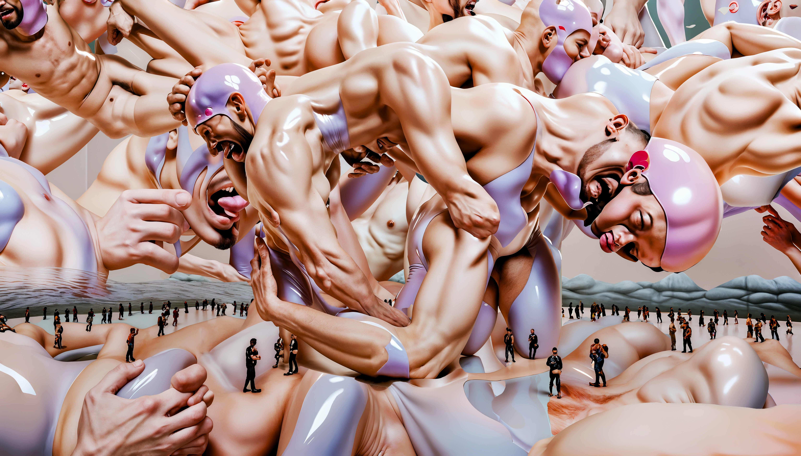

Downloadable Artist
Three videos. Three versions of the same artist trying to be enough. Downloadable Artist puts me on the marketplace, packaged, categorized, priced, and asks who I am performing for. The answer is everyone I have ever tried to satisfy.


Where We Once Were
The AIDS crisis did not just take lives. It took the places where queer people were safe enough to exist. Where We Once Were asks what an AI model can recover from a history it was never trained to remember. These are spaces that were erased in the name of public health. The erasure was the point.

Onanist_01
The white cube and gay culture operate on the same logic. Both decide who belongs. Both create barriers that disregard, forget and refuse entry to anyone who does not fit the version they have already decided on. Onanist_01 holds those two systems next to each other and watches them recognize themselves. What the gallery calls taste, the subculture calls type. The exclusion works the same way.
Dominance Again
Leather costs money. Events cost money. Access costs money. Dominance Again represents the feedback loop inside the kink and leather community where cis gay white men replicate the same hierarchies they claim to resist. The subculture mirrors the culture. The people left outside are the same people who are always left outside.